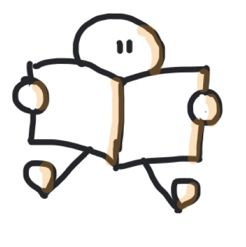

Il s’agit dans cette séance de s'entraîner à la technique de la chaîne pour retenir des listes.
2 choses sont importantes ici :
Si la liste doit être retenue dans l'ordre, la 2ème clef (l'association) sera très importante si vous voulez retrouver l'ordre !
Il faut être malin : il est souvent beaucoup plus facile de retenir quelque chose qui va symboliser, représenter le mot que l'on veut
retenir plutôt que le mot lui-même.
UN EXEMPLE EN HISTOIRE-GÉOGRAPHIE
Rappelez-vous qu'il faut rendre l’information « mémorable » grâce
a notre imagination. Par exemple, les États-Unis me font penser à Statue de la Liberté, Chine à un Dragon, le Japon à un Samouraï,
la Suisse à un "petit suisse", etc...À vous de trouver une image forte qui vous fera penser immédiatement au pays à retenir.
Ensuite, puisqu'il faut les retenir dans l'ordre, il faudra IMPÉRATIVEMENT faire des associations,
des liens entre vos images : il faut qu'elles interagissent l'une avec l'autre !
Essayez de mémoriser la liste des 20 pays les plus riches de la planète à l'aide de la technique de la chaîne :
Etats-Unis - Chine - Japon - Allemagne - France - Royaume-Uni - Inde - Italie - Canada - Corée du Sud - Russie -
Australie - Espagne - Brésil - Indonésie - Mexique - Pays-Bas - Suisse - Arabie Saoudite - Taiwan
Écoutez une proposition de solution :
UN EXEMPLE EN PHYSIQUE-CHIMIE
Ici encore, il s'agira de retenir une liste dans l'ordre. Il faudra donc faire des associations,
des liens entre vos images. On veut mémoriser les 20 atomes qui figurent dans ce tableau très connu en Chimie :
Rappelez-vous qu'il faut rendre l’information « mémorable » grâce
a notre imagination. Le 1er est donc l'Hydrogène qui me fait penser à "hydro" donc à "eau"...d'où la bouteille d'eau minérale.
Le 2ème est l'Hélium et on gonfle les ballons dirigeables à l'Hélium. Carbone fait penser à "Carbonara", la verrue se traite
avec de...l'Azote liquide (ou vous pouvez jouer sur la sonorité avec "zozote"), le dentifrice contient du Fluor (ou vous pouvez jouer
sur la sonorité avec stylo "fluo" qui vous rappellera "fluor"), etc... Vous pouvez aussi trouver votre image forte qui vous fera penser
au nom à retenir. Vous pouvez aussi jouer sur la sonorité ("Carbonara" sonne presque comme "Carbone", par exemple...)
Essayez de mémoriser la liste des 20 mots suivants à l'aide de la technique de la chaîne :
bouteille d'eau (Hydrogène) - ballon dirigeable (Hélium)
- une litière (Lithium) - un baril (ou des pâtes de la marque Barilla)(Béryllium) - bord d'une falaise (Bore)
- pâtes Carbonara (Carbone) -
verrue (ou un type qui zozote) (Azote) - bouteille de plongée sous-marine (Oxygène)
- dentifrice ou un stylo fluo (Fluor) - un néon (Néon) - un seau de rhum (Sodium)
- un aimant (Magnésium)- du papier d'aluminium (Aluminium)
- une puce d'ordinateur (Silicium) - un jouet phosphorescent (Phosphore)
- la fraise du dentiste (Soufre) - la piscine municipale (Chlore)
- un cargo (Argon) - un pot avec une tasse (dedans) (Potassium)
- lait ou calcul (Calcium)
Écoutez une proposition de solution :
UN EXEMPLE EN FRANÇAIS
Cette fois, l'ordre n'a pas d'importance ! Donc, ce sera plus facile car on peut commencer par le mot que l'on veut et les mettre dans
l'ordre qui nous arrange : à vous de voir dans quel ordre les mots vous inspirent...De plus, il vous faut commencer par un exemple qui
vous permettra de vous rappeler que ce sont des pluriels en "aux" : le mot travail semble être un choix tout indiqué !

La plupart des noms en -ail font leur pluriel en -ails